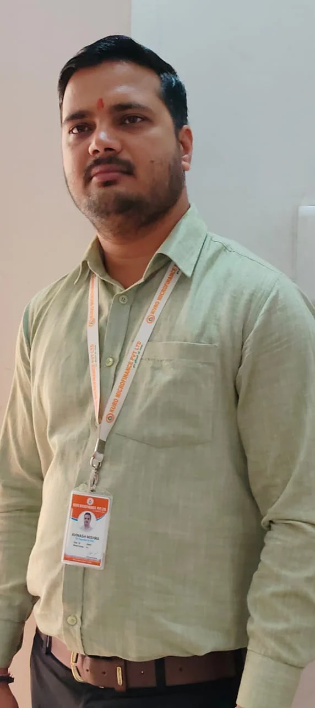

How we are different from other
Discover the core strengths that set Utthan Vision Microfinance Foundation apart in the financial industry.
Fastest Growing with Micro Loan
1.25 CR Portfolio, 2 Branches, 8+ Team size. Achieved in just 6 Months.
Cloud based Solution
Cloud based AWS on time Solution to ensure a smooth and efficient loan process.
Financially Independent Branch
All branch expenses are met through processing fees and cross-sale income.
Data Security
ITBS server is utilized to keep the personal and financial information of our customers completely safe.
Recovery Track
An outstanding 99.90% recovery and collection track record.
3 Day TAT
From sourcing to disbursement, we guarantee a swift 3 days Turn Around Time.
Our Loan Products
Designed to meet the unique financial needs of small businesses and individuals.
Income Generating Loans (IGL)
Smaller loans (10k to 50K) given to our clients at lower interest rates for shorter durations (up to 2 years) with the purpose of empowering them by supporting existing livelihoods and generating additional income sources. Available for Group & Individual with weekly repayment.
Apply NowBusiness Loans
Financial support given to individual clients who are unable to make lump sum payments for buying consumer business products. With tenures up to 2 years and weekly repayments, this product helps fulfill needs with a lesser burden.
Apply NowBusiness Process & TAT
Our transparent and efficient workflow ensures quick loan processing and disbursement.
| Process | Accountability | Turnaround Time (TAT) |
|---|---|---|
| Sourcing of Customer | Business Executive | Zero days |
| Group training, document verification & house visit | Business Executive | Within 3 working days of Sourcing |
| Cross Verification & House Visit | Branch/Field Credit & Audit Manager | Within 4 working days of Sourcing |
| Document Verification, Eligibility Check & Tele-calling | HO-Credit Team | Within 3 working days of Sourcing |
| Final Approval | Credit Committee | Within 3-4 working days of Sourcing |
| Signing of Loan Agreement | Business Executive/Branch Head | Within 3-4 working days of Sourcing |
| Loan Disbursement | HO-Account Department | Within 3-4 working days of Sourcing |
Our Leadership
Guided by visionary leaders committed to empowering rural India through inclusive financial solutions.

Mr. Avinash Kumar Mishra
M.A (Economics), MBA (Finance & Marketing)
Co-Founder & CEOMr. Avinash Mishra is the driving force behind Utthan Vision Microfinance Foundation. As Co-Founder & CEO, he leads with a vision to revolutionize the lending industry by establishing a unique business model focused on 100% cashless transactions and an impressive 99% recovery track. With over 12 years of extensive experience in business development, he has gained expertise in driving all verticals in business.
Mr. Avinash Mishra has made significant contributions to various sectors including microfinance, Self-Help Groups (SHGs), and institutional lending. His expertise and insights have been instrumental in shaping UVMF into a trusted name in the financial landscape.
Prior to UVMF, Mr. Avinash Mishra served as the Operation Head at Kuro Microfinance, where he gained invaluable experience in the industry. His decision to venture into entrepreneurship reflects his commitment to innovation and his determination to make a positive impact on the financial ecosystem.
Under his leadership, UVMF is poised to continue its journey of growth and excellence, driven by a relentless pursuit of customer satisfaction and operational efficiency.
Mrs. Shobha Mishra
M.A (Sociology), MLIS
DirectorMrs. Shobha Mishra serves as Director at Utthan Vision Microfinance Foundation, bringing a deep understanding of social dynamics and community welfare. Her academic background in Sociology and Library & Information Science equips her with a unique perspective on grassroots development and knowledge management.
Her leadership ensures that UVMF's operations remain transparent, ethical, and firmly centred around the well-being of every customer and community it serves, driving meaningful socio-economic change across rural India.
Frequently Asked Questions
Learn more about our microfinance loans, eligibility, and the completely transparent cashless process we offer across India.
1. What is Utthan Vision Microfinance Foundation?
Utthan Vision Microfinance Foundation (UVMF) is a trusted microfinance institution in India dedicated to the socio-economic upliftment of rural households. We provide accessible, transparent, and technology-driven small loans online and offline to empower local entrepreneurs.
2. How can I apply for a microfinance loan in India with UVMF?
Applying for a small loan online or at our branches is simple. You can reach out to our local branch staff or contact us via our website. Our 100% cashless system ensures a smooth, hassle-free application process designed specifically for microfinance in India.
3. What is the eligibility criteria for a small business loan?
Our small business loans are designed for individuals and entrepreneurs operating in rural or semi-urban areas. Eligibility typically depends on your age, existing household income, and repayment capacity. We focus on inclusion, making it easy for unbanked individuals to qualify.
4. What documents are required for a loan application?
To ensure a swift 3-day turnaround time (TAT), we require minimal documentation. Standard KYC documents including your Aadhaar Card, PAN Card, passport-sized photographs, and bank account details are generally sufficient to process your business loan in India.
5. Do you offer 100% cashless loan processing?
Yes, UVMF is proud to operate a 100% cashless system. From loan disbursement directly into your bank account to digital repayment collections, our cloud technology ensures secure, efficient, and fully transparent financial transactions.
6. How long does it take to get a loan approved?
We understand that timely capital is crucial. Our highly optimized sourcing and underwriting process boasts an impressive 3-day Turn Around Time (TAT), meaning your microfinance loan is approved and disbursed quickly without unnecessary delays.
7. What is the interest rate for microfinance loans?
UVMF offers highly competitive and affordable interest rates tailored for rural upliftment. Our rates are fully compliant with RBI guidelines for microfinance institutions in India, ensuring your repayment burden is kept to an absolute minimum.
8. Are there any hidden charges or processing fees?
Transparency is one of our core values. We guarantee that there are zero hidden charges. Any applicable processing fees or documentation charges are clearly communicated upfront before you sign your loan agreement.
9. How do I repay my loan online?
Repayments are completely digital and hassle-free. You can repay your small business loan online using UPI, bank transfers, or automated NACH mandates. Our cashless collection system has resulted in an outstanding 99% recovery track record.
10. Is collateral required for a small business loan in India?
No, most of our microfinance loans, including the Income Generating Loan (IGL), are fully unsecured. You do not need to provide any property, gold, or assets as collateral to receive funding for your business.
11. How secure is my personal and financial data with UVMF?
Your privacy and data security are our top priorities. We utilize state-of-the-art cloud technology and encrypted cashless platforms to ensure that all your personal information and financial transactions remain 100% secure at all times.
12. Can I apply for a second loan after repaying the first?
Absolutely! We aim to build long-term relationships with our clients. Once you successfully repay your first microfinance loan, you become eligible for larger loan amounts with even faster processing times to continuously fuel your business growth.
Ready to grow your business?
Join thousands of entrepreneurs who have achieved their dreams with UVMF.
Get in Touch TodayContact Us
Have questions about our products or need assistance? Reach out to us.
Phone
Our Journey & Achievements
Utthan Vision Microfinance Foundation (UVMF), meaning ‘easily accessible’, provides affordable financing with simple, no-hassle loan products to rural India.
Our Vision & Mission
To be the preferred choice for people at the bottom of the pyramid in creation of their enterprise and livelihood through a holistic approach. We provide easy access to financial services for low-income entrepreneurs.
Fastest Growing
Incorporated in 2016 and operations started in Varanasi in 2025. Within a short span of 6 months, we achieved a 1.25 CR portfolio with 500+ happy customers across 2 districts and 2 branches.
Technology & Trust
Driven by a 100% cashless system and cloud-based AWS solutions, we ensure data security, a fast 3-Day Turnaround Time (TAT), and an impressive 99.99% collection/recovery track.